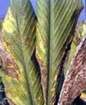

| Home |
| TURMERIC |
MAJOR DISEASES |
| 1. Rhizome Rot |
| 2. Leaf Spot |
| 3. Leaf Blotch |
MINOR DISEASES |
| 4. Dry rot |
| 5. eaf spot |
| 6. Leaf Blight |
| 7. Brown rot |
| Questions |
| Download Notes |
TURMERIC :: MAJOR DISEASE :: LEAF BLOTCH
Leaf Blotch -Taphrina maculans
Symptoms
This disease usually appears on lower leaves in October and November. The individual spots are small 1-2 mm in width and are mostly rectangular in shape. The disease is characterized by the appearance of several spots on both the surfaces of leaves, being generally numerous on the upper surface. They are arranged in rows along the veins. The spots coalesce freely and form irregular lesions. They first appear as pale yellow discolorations and then become dirty yellow in colour. The infected leaves disort and have reddish brown appearance.
|  |
Symptoms |
Disease cycle
The fungus is mainly air borne and primary infection occurs on lower leaves with the inoculum surviving in dried leaves of host, left over in the field. The ascospores discharged from successively maturing asci infect fresh leaves without dormancy, thus causing secondary infection. Secondary infection is most dangerous than primary one causing profuse sprouting all over the leaves. The pathogen persists in summer by means of ascogenous cells on leaf debris, and dessicated ascospores and blastospores in soil and among fallen leaves.
Management
- Select seed material from disease free areas.
- Treat the seed material with Mancozeb @ 3g/litre of water or Carbendazim @ 1 g/litre of water for 30 minutes and shade dry before sowing.
- Spray mancozeb @ 2.5 g/litre of water or Carbendazim @ 1g/litre; 2-3 sprays at fortnightly intervals.
- The infected and dried leaves should be collected and burnt in order to reduce the inoculum source in the field.
- Spraying Cpper oxy chloride at 3 g/l of water was found effective against leaf blotch.
- Crop rotations should be followed whenever possible.